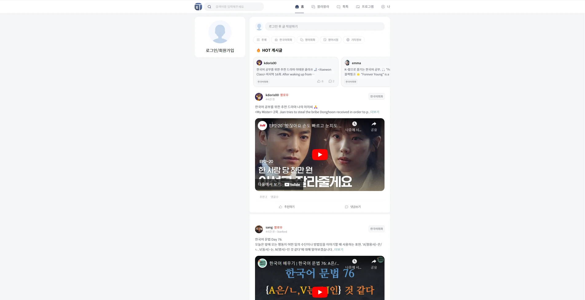
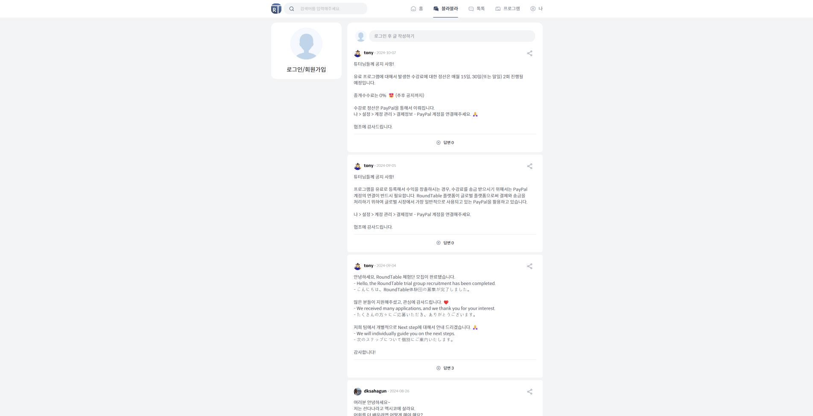
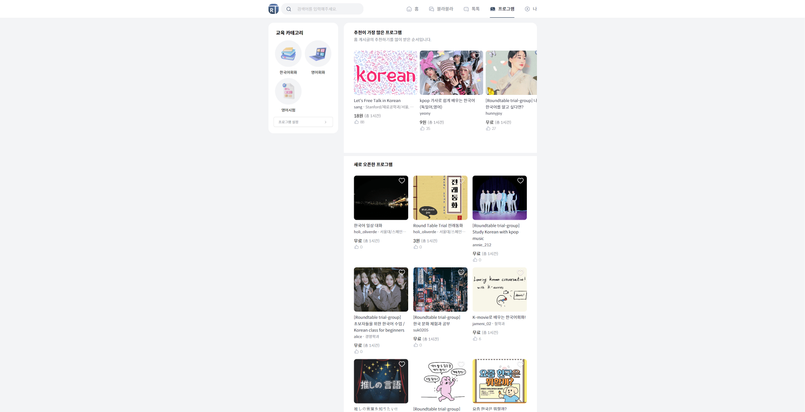

← Project Archive
Project 10 · 2023—2024
라운드 테이블
Flutter 앱 유지보수와 Next.js 웹 확장·운영을 담당한 글로벌 한국어 교육 SNS 서비스입니다.
- Role
- 프론트엔드 개발자
- Period
- 2023.05 — 2024.01
- Stack
- Flutter · Next.js
- Scope
- 한국어 학습 · 커뮤니티 · 운영
01 / Overview
프로젝트 소개
한류 콘텐츠를 통해 한국어를 학습하고 글로벌 사용자와 교류할 수 있도록 구성한 교육 SNS 서비스입니다. Flutter 앱을 유지보수하고 같은 기능을 제공하는 Next.js 웹 서비스를 확장·운영했습니다.
02 / Features
주요 기능
- 한류 콘텐츠 기반 한국어 학습
- AI Tutor와 AI 한국어 말하기
- 글로벌 사용자 커뮤니티
- 신규 콘텐츠 업데이트와 관리자 기능
- 앱·웹 서비스 유지보수와 운영
03 / Technology
기술 스택 및 프로젝트 화면
- Flutter 기반 모바일 앱
- Next.js 기반 웹 서비스
- 공통 API를 활용한 앱·웹 기능 연동


